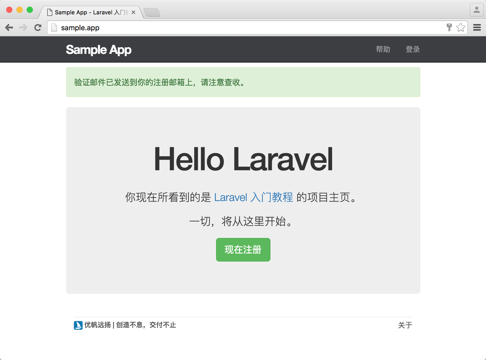
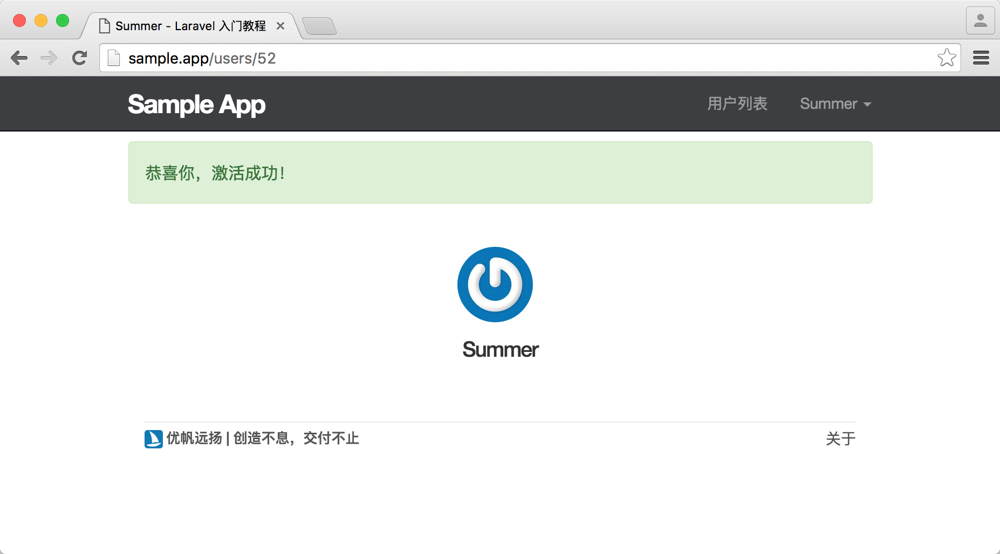

9.2. 账户激活
账户激活
现在的登录逻辑是，用户一旦注册成功即可进行登录，本节我们要加入账号激活功能，只有当用户成功激活自己的账号时才能在网站上进行登录。为此，我们将需要为用户表新增两个字段用于保存用户的激活令牌和激活状态。激活令牌用于验证用户身份，激活状态则用于判断用户是否已激活。
整个激活流程如下：
- 用户注册成功后，自动生成激活令牌；
- 将激活令牌以链接的形式附带在注册邮件里面，并将邮件发送到用户的注册邮箱上；
- 用户点击注册链接跳到指定路由，路由收到激活令牌参数后映射给相关控制器动作处理；
- 控制器拿到激活令牌并进行验证，验证通过后对该用户进行激活，并将其激活状态设置为已激活；
- 用户激活成功，自动登录；
接下来让我们跟之前一样，新建一个 Git 分支来开发新功能。
$ git checkout master
$ git checkout -b account-activation-password-resets资源
添加字段
在用户的账号激活功能中，我们需要为激活令牌 (activation_token) 和激活状态 (activated) 字段新增一个迁移，来将这两个字段添加到用户表中。由于我们进行的是字段添加操作，因此在命名迁移文件时需要加上前缀，遵照如 add_column_to_table 这样的命名规范，并在生成迁移文件的命令中启用 --table 项目，用于指定对应的数据库表。最终的生成命令如下：
$ php artisan make:migration add_activation_to_users_table --table=users我们将使用随机字符来生成用户的激活令牌，因此这里的激活令牌字段需要为 string 类型，在用户成功激活以后，我们还会对激活令牌进行清空，避免用户进行多次使用，因此我们还需要将字段设置为 nullable，代表该字段允许为空。而用户的激活状态只有已激活和未激活两种状态，默认为未激活的状态，因此我们可以将激活状态设置为 boolean 类型，当其值为真时，代表已激活，反之亦然。
现在让我们来为新增的迁移文件加上这两个字段。
database/migrations/[timestamp]_add_activation_to_users_table.php
<?php
use Illuminate\Support\Facades\Schema;
use Illuminate\Database\Schema\Blueprint;
use Illuminate\Database\Migrations\Migration;
class AddActivationToUsersTable extends Migration
{
/**
* Run the migrations.
*
* @return void
*/
public function up()
{
Schema::table('users', function (Blueprint $table) {
$table->string('activation_token')->nullable();
$table->boolean('activated')->default(false);
});
}
/**
* Reverse the migrations.
*
* @return void
*/
public function down()
{
Schema::table('users', function (Blueprint $table) {
$table->dropColumn('activation_token');
$table->dropColumn('activated');
});
}
}接着我们还需要运行迁移，将字段加入到用户表中。
$ php artisan migrate生成令牌
我们在前面说过，用户的激活令牌需要在用户创建（注册）之前就先生成好，这样当用户注册成功之后我们才可以将令牌附带到注册链接上，并通过邮件的形式发送给用户。
如果我们需要在模型被创建之前进行一些设置，则可以通过监听 creating 方法来做到。该方法是由 Eloquent 模型触发的一个事件。事件是 Laravel 提供一种简单的监听器实现，我们可以对事件进行监听和订阅，从而在事件被触发时接收到响应并执行一些指定操作。Eloquent 模型默认提供了多个事件，我们可以通过其提供的事件来监听到模型的创建，更新，删除，保存等操作。creating 用于监听模型被创建之前的事件，created 用于监听模型被创建之后的事件。接下来我们要生成的用户激活令牌需要在用户模型创建之前生成，因此需要监听的是 creating 方法。
在用户模型中添加 creating 方法如下。
app/Models/User.php
<?php
namespace App\Models;
.
.
.
class User extends Authenticatable
{
.
.
.
protected $hidden = ['password', 'remember_token'];
public static function boot()
{
parent::boot();
static::creating(function ($user) {
$user->activation_token = str_random(30);
});
}
.
.
.
}boot 方法会在用户模型类完成初始化之后进行加载，因此我们对事件的监听需要放在该方法中。
现在，我们需要更新模型工厂，将生成的假用户和第一位用户都设为已激活状态。
database/factories/UserFactory.php
<?php
use Faker\Generator as Faker;
/*
|--------------------------------------------------------------------------
| Model Factories
|--------------------------------------------------------------------------
|
| This directory should contain each of the model factory definitions for
| your application. Factories provide a convenient way to generate new
| model instances for testing / seeding your application's database.
|
*/
$factory->define(App\Models\User::class, function (Faker $faker) {
$date_time = $faker->date . ' ' . $faker->time;
static $password;
return [
'name' => $faker->name,
'email' => $faker->safeEmail,
'is_admin' => false,
'activated' => true,
'password' => $password ?: $password = bcrypt('secret'),
'remember_token' => str_random(10),
'created_at' => $date_time,
'updated_at' => $date_time,
];
});database/seeds/UsersTableSeeder.php
<?php
use Illuminate\Database\Seeder;
use App\Models\User;
class UsersTableSeeder extends Seeder
{
/**
* Run the database seeds.
*
* @return void
*/
public function run()
{
$users = factory(User::class)->times(50)->make();
User::insert($users->makeVisible(['password', 'remember_token'])->toArray());
$user = User::find(1);
$user->name = 'Aufree';
$user->email = 'aufree@yousails.com';
$user->password = bcrypt('password');
$user->is_admin = true;
$user->activated = true;
$user->save();
}
}完成之后，我们重置并填充数据库。
$ php artisan migrate:refresh --seed邮件程序
在接下来的功能开发中，我们将使用 Laravel 来发送邮件，为了方便测试，我们需要对环境配置文件 .env 进行配置，使用 log 邮件驱动的方式来调试邮件发送功能，这么做的好处是邮件并不会真正被发送出去，而是会出现在 storage/logs/laravel.log 文件中，该文件记录着一切 Laravel 在运行时的日志信息，有助于我们在本地进行开发调试。
.env
.
.
.
MAIL_DRIVER=log
.
.
.激活账户
激活路由
我们需要为用户的激活功能设定好路由，该路由将附带用户生成的激活令牌，在用户点击链接进行激活之后，我们需要将激活令牌通过路由参数传给控制器的指定动作，最终生成的激活链接例子如下：
http://sample.app/signup/confirm/O1TTEr3faVq4fpzFXaOVQD4EAO9mQL由上面链接我们可以推导出路由的定义应该如下。
routes/web.php
<?php
Route::get('/', 'StaticPagesController@home')->name('home');
Route::get('/help', 'StaticPagesController@help')->name('help');
Route::get('/about', 'StaticPagesController@about')->name('about');
Route::get('signup', 'UsersController@create')->name('signup');
Route::resource('users', 'UsersController');
Route::get('login', 'SessionsController@create')->name('login');
Route::post('login', 'SessionsController@store')->name('login');
Route::delete('logout', 'SessionsController@destroy')->name('logout');
Route::get('signup/confirm/{token}', 'UsersController@confirmEmail')->name('confirm_email');在 Laravel 中，我们使用视图来构建邮件模板，在用户查收邮件时，该模板将作为内容展示视图。接下来我们需要创建一个用于渲染注册邮件的 confirm 视图。
resources/views/emails/confirm.blade.php
<!DOCTYPE html>
<html>
<head>
<meta charset="UTF-8">
<title>注册确认链接</title>
</head>
<body>
<h1>感谢您在 Sample 网站进行注册！</h1>
<p>
请点击下面的链接完成注册：
<a href="{{ route('confirm_email', $user->activation_token) }}">
{{ route('confirm_email', $user->activation_token) }}
</a>
</p>
<p>
如果这不是您本人的操作，请忽略此邮件。
</p>
</body>
</html>登录时检查是否已激活
在我们前面章节加入的登录操作中，用户即使没有激活也能够正常登录。接下来我们需要对之前的登录代码进行修改，当用户没有激活时，则视为认证失败，用户将会被重定向至首页，并显示消息提醒去引导用户查收邮件。
app/Http/Controllers/SessionsController.php
<?php
namespace App\Http\Controllers;
.
.
.
class SessionsController extends Controller
{
.
.
.
public function store(Request $request)
{
$credentials = $this->validate($request, [
'email' => 'required|email|max:255',
'password' => 'required'
]);
if (Auth::attempt($credentials, $request->has('remember'))) {
if(Auth::user()->activated) {
session()->flash('success', '欢迎回来！');
return redirect()->intended(route('users.show', [Auth::user()]));
} else {
Auth::logout();
session()->flash('warning', '你的账号未激活，请检查邮箱中的注册邮件进行激活。');
return redirect('/');
}
} else {
session()->flash('danger', '很抱歉，您的邮箱和密码不匹配');
return redirect()->back();
}
}
.
.
.
}发送邮件
接下来我们要开始使用邮箱发送功能，在 Laravel 中，可以通过 Mail 接口的 send 方法来进行邮件发送，示例如下：
$view = 'emails.confirm';
$data = compact('user');
$from = 'aufree@yousails.com';
$name = 'Aufree';
$to = $user->email;
$subject = "感谢注册 Sample 应用！请确认你的邮箱。";
Mail::send($view, $data, function ($message) use ($from, $name, $to, $subject) {
$message->from($from, $name)->to($to)->subject($subject);
});Mail 的 send 方法接收三个参数。
- 第一个参数是包含邮件消息的视图名称。
- 第二个参数是要传递给该视图的数据数组。
- 最后是一个用来接收邮件消息实例的闭包回调，我们可以在该回调中自定义邮件消息的发送者、接收者、邮件主题等信息。
接下来让我们为用户控制器定义一个 sendEmailConfirmationTo 方法，该方法将用于发送邮件给指定用户。我们会在用户注册成功之后调用该方法来发送激活邮件，具体代码实现如下。
app/Http/Controllers/UsersController.php
<?php
namespace App\Http\Controllers;.
.
.
.
use Mail;
class UsersController extends Controller
{
.
.
.
public function store(Request $request)
{
$this->validate($request, [
'name' => 'required|max:50',
'email' => 'required|email|unique:users|max:255',
'password' => 'required|confirmed|min:6'
]);
$user = User::create([
'name' => $request->name,
'email' => $request->email,
'password' => bcrypt($request->password),
]);
$this->sendEmailConfirmationTo($user);
session()->flash('success', '验证邮件已发送到你的注册邮箱上，请注意查收。');
return redirect('/');
}
.
.
.
protected function sendEmailConfirmationTo($user)
{
$view = 'emails.confirm';
$data = compact('user');
$from = 'aufree@yousails.com';
$name = 'Aufree';
$to = $user->email;
$subject = "感谢注册 Sample 应用！请确认你的邮箱。";
Mail::send($view, $data, function ($message) use ($from, $name, $to, $subject) {
$message->from($from, $name)->to($to)->subject($subject);
});
}
}请注意我们需要调用 use Mail 来引入邮件相关的操作方法。通过上面代码可以看到，我们把之前用户注册成功之后进行的登录操作：
Auth::login($user);替换为了激活邮箱的发送操作：
$this->sendEmailConfirmationTo($user);注册成功提示语改为查看邮箱的提示语。在激活邮件发送成功之后，我们还会将用户重定向至首页，而并非之前的用户个人页。
激活功能
现在的邮箱发送功能已经能够正常使用，接下来让我们完成前面定义的 confirm_email 路由对应的控制器方法 confirmEmail，来完成用户的激活操作。并且在 __construct 方法里开启未登录用户访问权限。
app/Http/Controllers/UsersController.php
<?php
namespace App\Http\Controllers;.
.
.
.
class UsersController extends Controller
{
public function __construct()
{
$this->middleware('auth', [
'except' => ['show', 'create', 'store', 'index', 'confirmEmail']
]);
.
.
.
}
.
.
.
public function confirmEmail($token)
{
$user = User::where('activation_token', $token)->firstOrFail();
$user->activated = true;
$user->activation_token = null;
$user->save();
Auth::login($user);
session()->flash('success', '恭喜你，激活成功！');
return redirect()->route('users.show', [$user]);
}
}Auth 中间件黑名单中，我们增加了 confirmEmail 来开启未登录用户的访问。
在 confirmEmail 中，我们会先根据路由传送过来的 activation_token 参数从数据库中查找相对应的用户，Eloquent 的 where 方法接收两个参数，第一个参数为要进行查找的字段名称，第二个参数为对应的值，查询结果返回的是一个数组，因此我们需要使用 firstOrFail 方法来取出第一个用户，在查询不到指定用户时将返回一个 404 响应。在查询到用户信息后，我们会将该用户的激活状态改为 true，激活令牌设置为空。最后将激活成功的用户进行登录，并在页面上显示消息提示和重定向到个人页面。
如果我们尝试注册一个新用户：

便能够在 laravel.log 文件的最后面，看到有以下相关的内容输出。
storage/logs/laravel.log
.
.
.
[2017-08-03 04:40:48] local.DEBUG: Message-ID: <3e1472734effe20355c9cd888d2f47bd@sample.app>
Date: Thu, 03 Aug 2017 04:40:47 +0000
Subject: =?utf-8?Q?=E6=84=9F=E8=B0=A2=E6=B3=A8=E5=86=8C?= Sample
=?utf-8?Q?=E5=BA=94=E7=94=A8=EF=BC=81=E8=AF=B7?=
=?utf-8?Q?=E7=A1=AE=E8=AE=A4=E4=BD=A0=E7=9A=84?=
=?utf-8?Q?=E9=82=AE=E7=AE=B1=E3=80=82?=
From: Aufree <aufree@yousails.com>
To: summer2@yousails.com
MIME-Version: 1.0
Content-Type: text/html; charset=utf-8
Content-Transfer-Encoding: quoted-printable
<!DOCTYPE html>
<html>
<head>
<meta charset="UTF-8">
<title>注册确认链接</title>
</head>
<body>
<h1>感谢您在 Sample 网站进行注册！</h1>
<p>
请点击下面的链接完成注册：
<a href="http://sample.app/signup/confirm/Du6ceeSFg0ok4ZPS4nE5lFwMPWAG2E">
http://sample.app/signup/confirm/Du6ceeSFg0ok4ZPS4nE5lFwMPWAG2E
</a>
</p>
<p>
如果这不是您本人的操作，请忽略此邮件。
</p>
</body>
</html> 上面的邮件主题（Subject）由于 UTF-8 解码原因导致文字没有正常显示出来，不过没关系，通过 Log 我们已经可以判定邮件已经可以成功发送。在浏览器上尝试访问在 laravel.log 文件中输出的激活链接，则可以看到新注册用户被成功激活。

现在我们已经完成用户激活功能的开发，可以先对代码进行提交：
$ git add -A
$ git commit -m "Add account activations"